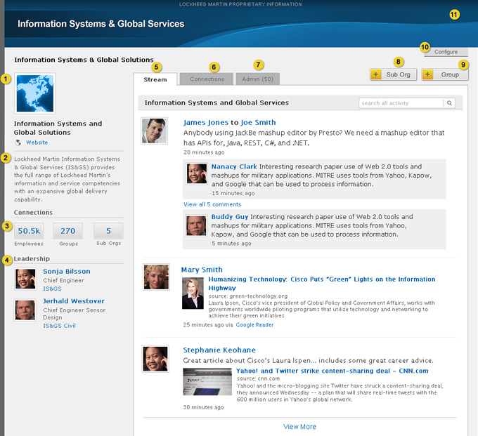
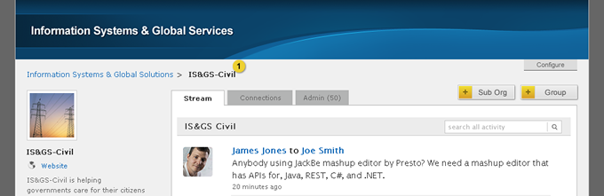

Home > Product Specification > Features > View and manage an organization profile
View and manage an organization profile
Search profiles
View and manage a group profile
Overview
An organization is an operating unit within an enterprise. It is comprised of employees and groups responsible for delivering on its mission. An organization is represented by a profile page where it may communicate news and important information. The organization’s channel aggregates the activity of its employees and groups supporting organization-wide discovery of content. An organization is responsible for establishing the default configuration for employee or group profiles. If the organization’s social media policy permits, an administrator may customize a profile by choosing a theme and additional apps.
Conditions of satisfaction
- The knowledge worker must be able to navigate the organization hierarchy from an organization profile.
- The knowledge worker must be able to browse the employees, groups, and sub-organization associated with an organization profile.
- The knowledge worker must be able to view a stream of aggregated activity from employees and groups associated with the organization or its sub-organizations.
- The organization coordinator must be able to upload and resize an image acting as an avatar for the organization profile.
- The organization coordinator must be able to upload a banner for the organization profile.
- The system must display the banner selected by the parent organization (recursively) when a banner is not configured for the organization profile.
- The organization coordinator must be able to select a parent organization for the organization profile.
- The organization coordinator must be able to set a short description describing the organization profile.
- The organization coordinator must be able to set a url representing the website for the organization.
- The organization coordinator must be able to add and remove colleagues as coordinators for the organization profile.
- The organization coordinator must be able to publish the leadership of an organization to the organization profile.
- The organization coordinator must be able to create a new sub-organization.
- The organization coordinator must have the option to require group creation approval.
- The organization coordinator must be able to approve or deny pending group creation requests.
- The organization coordinator must be able to restore an activity that has been flagged as inappropriate.
User experience
Organization Profile

- Organization avatar, name, link to website (opens in new window)
- Organization description
- Links to the employee, group, and sub-org sections under the connect tab.
- Organization leadership, name and avatar link to the employee profile and organization name links to the organization profile.
- Tab contains activity as described in the Post to a stream, View a stream of activity, and Search a stream designs.
- Tab contains list of employees, groups and sub-orgs associated with the organization.
- Tab contains list of flagged content and pending groups.
- Button to create new sub organization.
- Button to create new group.
- Button to edit organization profile.
- Banner image.
Create Sub Organization

- Name of the organization this sub org was created under. This field is not editable.
- Organization Name field supports up to 50 characters.
- Organization Web Address field supports up to 20 lower case characters.
- Hovering over an employee name, meta data or avatar displays a Delete link allowing the knowledge worker to remove the employee as a coordinator.
- Add Coordinator link displays the employee lookup modal which allows the knowledge worker to select employees that that will be organization coordinators. Refer to the Employee Lookup UX Guidelines for more information. The knowledge worker must be selected by default as an organization coordinator. At least one employee must be selected as a coordinator.
- Submits the form and returns the knowledge worker to the sub org tab of the organizations profile connections tab. Feedback displays at the top of the page with a close option: “Your sub organization has been successfully created”. Refer to the Action Feedback UX Guidelines for additional details.
- Discards the changes made to the form and returns the knowledge worker to the organization’s profile page.
Sub Organization Profile

- Breadcrumb trail allowing the knowledge worker to navigate back to to the root organization profile.
Connections Tab
Employees

- Links to view listings of employees, groups, and sub orgs associated to the organization.
- Links to sort the employee and group listings by the date added and by the number of followers.
- Name and avatar link to the employee’s profile page, the organization name links to the organization profile that the employee is associated to. Employees are recursively displayed.
- Paging controls
Groups

- Name and avatar link to the group’s profile page, the organization name links to the organization profile. Groups are recursively displayed.
- Links to private group profile. Private groups should be displayed to all knowledge workers. If knowledge worker hovers over the icon, the message “Private Group” should be displayed. If the knowledge worker clicks on the private group profile link and does not have access to the private group, the Request Access to Private Group message in the View and manage a group profiledesign should be displayed.
Sub Organizations

- Name and avatar link to the sub organization’s profile page. Organizations are not recursively displayed.
Admin Tab
Flagged Activities

- Tab displays the total number of new flagged items and group requests pending for.
- Link contains the total number of new flagged items pending. Flagged items roll up to the parent org level only. Requests are not rolled up above the parent level (i.e. if your Parent Organization is a Sub organization, the request is shown in the Sub Organization Admin tab, not the Root Org Admin tab.)
- Clicking the allow button removes the item from the list, the other items move up, the number of flagged items is reduced, and a feedback message is displayed: “The flagged activity has been allowed”. Refer to the Action Feedback UX Guidelines for additional details.
- Clicking the delete button displays a pop-up window asking the user if they are sure that they want to delete the activity. After the message is confirmed the item is removed from the list, the other items move up, the number of requests is reduced, and a feedback message is displayed: “The flagged activity has been deleted”. Refer to the Action Feedback UX Guidelines for additional details.
Group Requests

- Tab displays the total number of new flagged items and group requests pending.
- Tab contains the total number of new groups pending. New group pending requests are roll up to the parent org level only. Requests are not rolled up above the parent level (i.e. if your Parent Organization is a Sub organization, the request is shown in the Sub Organization Admin tab, not the Root Org Admin tab.)
- Clicking the approve button removes the item from the list, the other items move up, the number of requests is reduced, and a feedback message is displayed: “The [group name] group has been approved”. Refer to the Action Feedback UX Guidelines for additional details. Once approved, the profile is visible to knowledge workers and an email is sent to the group creator letting them know that the group has been approved.
- Clicking the deny button displays a pop-up window asking ” Are you sure you want to deny creation of this group?”. After the message is confirmed the request item is removed from the list, the other items move up, the number of requests is reduced, and a feedback message is displayed: “The request to create the [group name] group has been denied”. Refer to the Action Feedback UX Guidelines for additional details. Once denied, an email to the group creator is sent letting them know that the group has been denied.
Edit Organization Profile

- Upload avatar. Refer to the Upload Avatar UX Guidelines for additional details.
- Input field to enter the name of the organization. Organization Name field supports up to 50 characters.
- Text area to enter an organization description. Description field supports up to 250 characters.
- Input field to enter a URL to the organization’s website. URL must be in the following example format: http://www.example.com. Validate that at least one ‘.’ exists in the url.
- Hovering over an employee displays a Delete link allowing the knowledge worker to remove the employee as a leader.
- Add Leader link allows the knowledge worker to select employees that are leaders in the organization. Refer to the Employee Lookup UX Guidelines for more information.
- Hovering over an employee name, meta data or avatar displays a Delete link allowing the knowledge worker to remove the employee as a coordinator.
- Add Coordinator link displays the employee lookup modal which allows the knowledge worker to select employees that are organization coordinators. Refer to the Employee Lookup UX Guidelines for more information.
- Refer to the Profile Banner Upload UX Guidelines for additional details. The delete link removes the uploaded banner and replaces it with the parent organizations banner (recursively). If a parent organization banner does not exist, the system default banner displays. Delete link should be hidden until a Sub Organization specific banner is uploaded. Upon delete, a popup window is displayed asking the knowledge worker if they are sure they want to delete the banner image.
- New Group Moderation is disabled by default.
- Saves the edits made to the form and returns the knowledge worker to the profile page. Feedback displays at the top of the page with a close option: “Your organization has been successfully saved”. Refer to the Action Feedback UX Guidelines for additional details.
- Discards the changes made to the form and returns the knowledge worker to the profile page.
- Discards the changes made to the form and returns the knowledge worker to the profile page.
Test plans
Knowledge Worker
- Action: Navigate the organization hierarchy from an organization profile
- Verify the profile pages of the organization hierarchy can easily be viewed and accessed from the organization profile
- Action: Browse the employees, groups, and sub-organization associated with an organization profile
- Verify the ability to view employees associated with an organization via the Employees view on the organization’s Connections tab
- Verify the ability to view groups associated with an organization via the Groups view on the organization’s Connections tab
- Verify the ability to view sub-organizations associated with an organization via the Sub-Orgs view on the organization’s Connections tab
- Verify the ability to page through results of each view if more items are present than can be displayed on one screen
- Action: View a stream of aggregated activity from employees and groups associated with the organization or its sub-organizations
- Verify all content posted by employees, or to groups and sub-organization associated with the organization are displayed in the organizations stream (with the exception of private groups within the organization
Group Coordinator
- Action: Execute same tests as Knowledge Worker
- Verify tests executed successfully
Organization Coordinator
- Action: Execute same tests as Knowledge Worker
- Verify tests executed successfully
- Action: Upload and resize an image acting as an avatar for the organization profile
- Verify the ability to upload a file only of type JPG, PNG, GIF
- Verify error handling is present if the file type is not correct
- Verify the ability to upload a file that is 4MB or smaller
- Verify error handling is present if the file is larger than 4MB
- Verify the ability to crop the image
- Verify the avatar is correctly displayed on the group profile
- Action: Upload a banner for the organization profile
- Verify a preview of the upload is accessible
- Verify the org coordinator can browse for a file
- Verify banner file types are limited to JPG, PNG, and GIF
- Verify the banner size is limited to 4MB or smaller
- Verify the uploaded banner is automatically cropped to 990 x 100 pixels high
- Action: Confirm the banner selected by the parent organization is displayed when a banner is not configured for the organization profile
- Verify a custom banner can be removed
- Verify that when a custom banner is not uploaded, the parent organizations banner displays (recursively)
- Verify that the system default banner displays when the parent organization and recursive organizations do not have a custom banner defined
- Action: Select a parent organization for the organization profile
- Verify that when creating an organization, the organization or sub-organization the group is to be associated must be chosen
- Verify that the associated organization can be changed via the organization profile
- Verify the associated organization is displayed correctly on the organization profile
- Verify the associated organization is displayed correctly in the breadcrumbs
- Action: Set a short description describing the organization profile
- Verify the short description is an optional field on the edit profile page
- Verify the short description is limited to 250 characters
- Verify the short description is displayed on the profile
- Action: Set to set a url representing the website for the organization
- Verify the ability to enter a url representing the website for the organization via the edit profile page
- Verify it is displayed on the profile page for the organization
- Action: Add and remove colleagues as coordinators for the organization profile
- Verify the ability to lookup a colleague
- Verify the ability of the selected colleague to have organization coordinator rights
- Verify the ability to remove an existing organization coordinator
- Verify colleague removed as an organization coordinator no longer has organization coordinator rights to the organization
- Verify that an organization coordinator is required to be defined when an organization is being created
- Verify that an organization coordinator must be defined once the organization has been created
- Verify the organization coordinators are displayed on the organization profile page
- Action: Publish the leadership of an organization to the organization profile
- Verify the ability to lookup a colleague and select him/her as the leadership associated with the organization
- Verify the ability to view leadership of an organization on the profile
- Verify the ability to remove an existing Organization leader
- Action: Create a new sub-organization
- Verify a sub organization can be created
- Verify the organization name, organization web address, parent organization and organization coordinators are required to be populated in order for the sub-organization to be created
- Verify the newly created sub-organization appears in the directory
- Action: Confirm ability to require group creation approval
- Verify the ability to require group creation approval
- Verify a knowledge worker cannot create a group without approval
- Verify the ability to not require group creation approval
- Verify a knowledge worker is able to create a group without approval
- Action: Approve or deny pending group creation requests
- Verify that when group creation approval is enabled, all requests for group creates are displayed on the Admin Tab, with the Group Request filter set
- Verify there is an accurate count of pending group requests displayed next to the Group Requests filter option
- Verify that a group can be approved
- Verify that when a group is approved, the count of outstanding group creation requests is decreased by one
- Verify that the approved group appears in the directory
- Verify that a group creation request can be denied
- Verify that when a group is denied, the count of outstanding group creation requests is decreased by one
- Verify the denied group does not appear in the directory
- Action: Restore an activity that has been flagged as inappropriate
- Verify an activity which has been flagged as inappropriate is displayed on the Admin tab of the organization
- Verify the number beside the sort option for Flagged activities accurately reflects the number of activities which are flagged
- Verify the ability to restore the flagged as inappropriate activity
- Verify the restored activity is returned to the stream in the appropriate place based on time
- Verify the number of flagged activities is decreased by one after a flagged activity has been restored
- Verify a flagged activity can be deleted from the admin page
- Verify the number of flagged activities is decreased by one after a flagged activity has been deleted
- Verify the deleted activity does not return to the stream
Root Organization Coordinator
- Action: Execute same tests as Knowledge Worker
- Verify tests executed successfully
- Action: Execute same tests as Organization Coordinator
- Verify tests executed successfully
- Action: Confim default banner for root organizaiton
- Verify that the root organization has a system default banner
| PAGE CONTENTS
Version 0.9
Documentation is also available for all of the following versions:
1.0 | 1.1 | 1.5 | 2.0
|